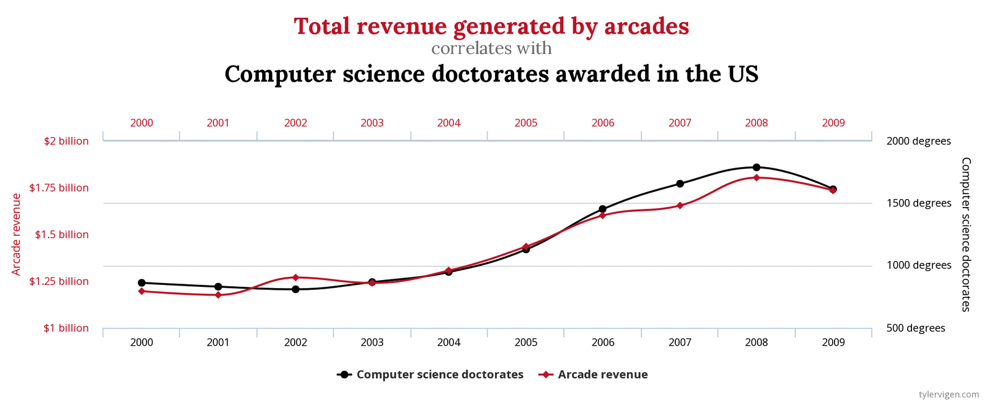
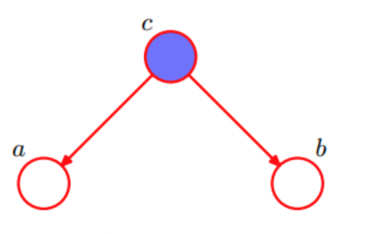
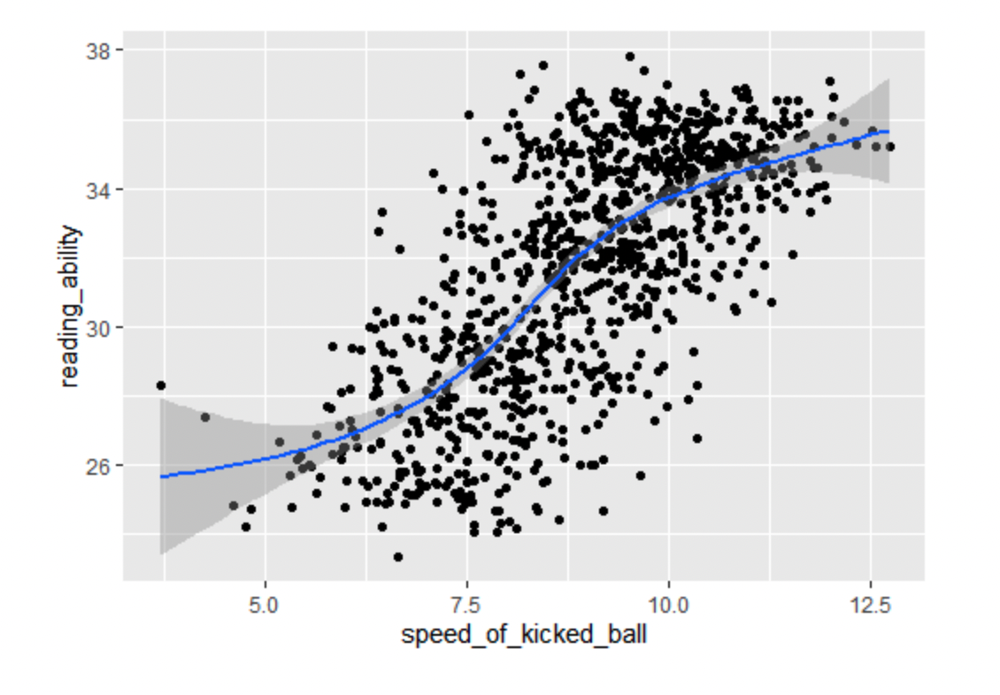
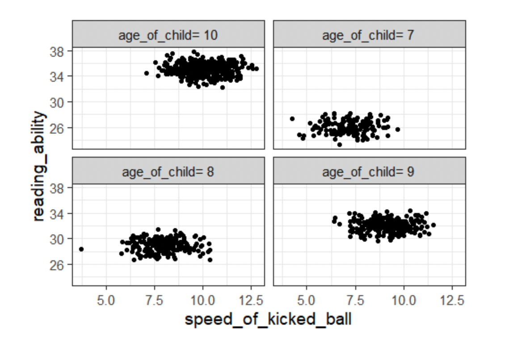
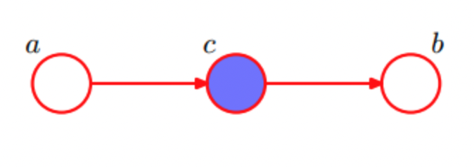
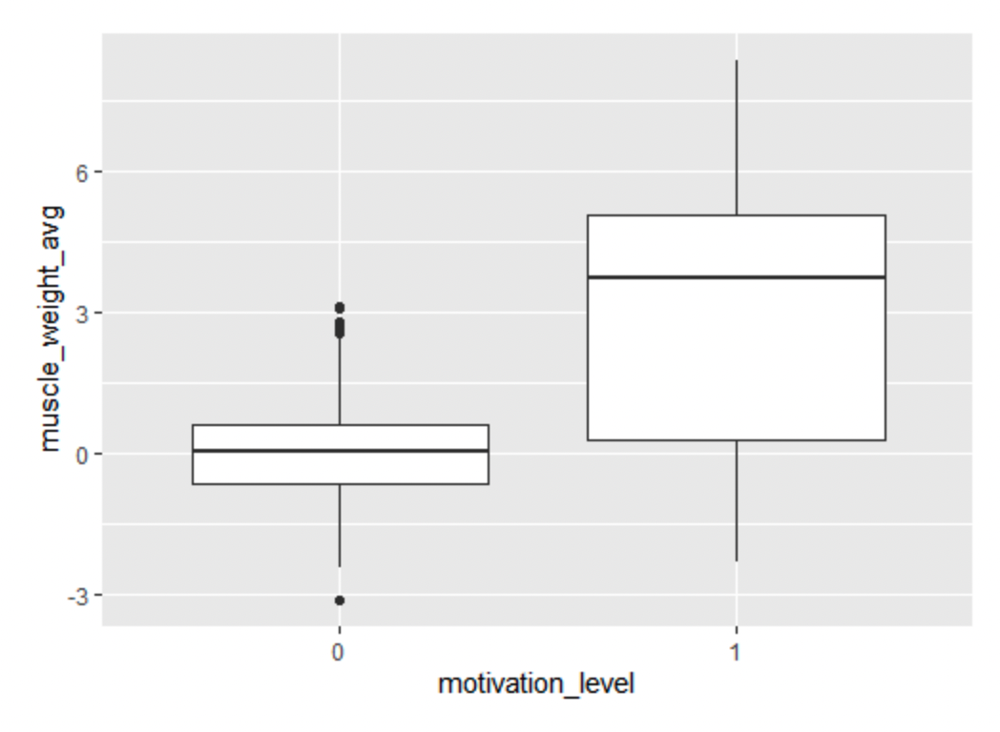
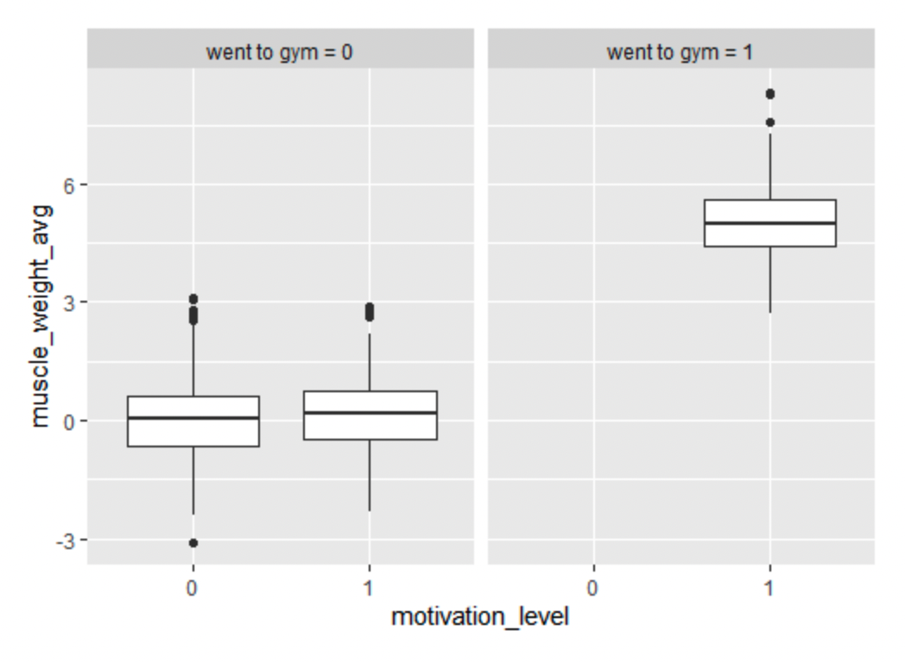
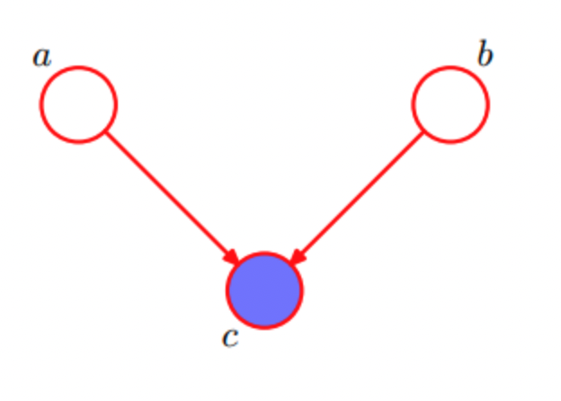

One phrase you heard in your probability class is that correlation does not imply causation. Later, you came across the the popular association between ice-cream and drowning numbers, you instantly recall that does not mean the ice-cream is the cause of the drowning. But, how can you explain the existence of the association? In this blog post, various interpretation of the non-casual associations is listed and explained. The code snippets used are in this notebook
An association can be observed if the data points used are too few to be used in statistical test i.e, relationship existed by chance. Thus, having more data may show that the relationship between variables do not exist.
Also referred to as p-hacking, data dreding, or cherry picking. This can happen when conducting large number of exploration, and testing hypothesis and only report those who shows the associations. You can take a look for various examples in spurious-correlations, and here one that shows that there is relationship between computer science doctorates and arcade revenue. While, you can't think of logical scenario where one of these variables will be the cause of the other, this plot shows a very strong association between them. This plot is a result of data dreding, where no experiments is conducted over isolated variables against control groups. The association, maybe just by pure chance, happen to exist for the subset of data in hand.

A possible misinterpretation of the association is to reverse the cause and effect. In a study published in Nature in 1999 where the findings showed that "Small children and babies who sleep with the light on are more likely to grow up shortsighted than children who sleep in the dark" [4]. While there is no causal link starting from turning light on to have short-sightedness, a reverse link was found. It turned out that parents who shortsighted tends to leave lights on, and given the short-sightedness is genetic, the children of those parents may inherit it. So, short-sightedness is the cause and turning the light on is the effect.

The common cause or fork junction, where c is the confounder of a and b. Due to c, the variables a and b will be statistically correlated. If we conditioned on c as in figure, we will block the path of association from a to b. Thus, we call a and b 'conditionally independent'.
Here we implement a tweaked example from [2] using the code flow used in [1]:
c = age of child
a = speed of ball kicked by a child
b = reading ability of child
The variables a and b are gaussian with mean of age_of_child and 3 x age_of_child + 5 respectively, and standard deviations of 1. This should make both a (speed of kicked ball) and b (reading ability) high with higher values of age of child. (the equations here are randomly initialized, and is not based on any facts)
First we initialize the data points
n <- 1000 # number of data points
ages <- 7:10
prob_ages <- c(1/5, 1/4, 1/3, 1/2)
age_of_child = sample(ages, size = n, replace = TRUE, prob = prob_ages)
speed_of_kicked_ball <- rnorm(n, mean= age_of_child, sd=1)
reading_ability <- rnorm(n, mean= 3*age_of_child + 5, sd=1)Then, we visualize how speed of kicked ball and reading ability correlates with 0.69 degree of correlation.

> cor(speed_of_kicked_ball, reading_ability)
[1] 0.6955224Lastly, we visualize the variables again but this time conditioned on the age. To find out the correlation between the speed of kicked ball and their reading ability has almost zero correlation in each age.

dt[, .(correlation=cor(x=speed_of_kicked_ball, y=reading_ability)), by=age_of_child]
age_of_child correlation
1: age_of_child= 9 -0.04682699
2: age_of_child= 10 -0.04419920
3: age_of_child= 8 0.01215684
4: age_of_child= 7 0.03341457Thus we conclude that age of child is a common cause, that makes speed of kicked ball and reading ability correlates, while there are no causal link.

The variable c is called the mediator, which allow the effect of a to be transmitted to b. Again, c here blocks the path from a to b. So, if c is being condition on, the correlation between a and b would disappear.
Here we implement this associations by:
a = motivation level to joining a gym
c = either joining the gym or not
b = average of muscle weight increase in the body
Initializing the motivation and going to gym as binomial variables with 70% probability to be motivated and 50% to going to gym if you are motivated.
n <- 1000
motivation_level <- rbinom(n, size=1, prob=0.7)
gym<- rbinom(n, size=motivation_level, prob=0.5)
muscle_weight_avg <- rnorm(n, mean= gym*5 , sd=1)
dt <- data.table(motivation_level = factor(motivation_level),muscle_weight_avg, gym =paste0("went to gym = ",factor(gym)))Visualizing the motivation level against the muscle average weight shows an association.
ggplot(dt, aes(x=motivation_level, y=muscle_weight_avg)) + geom_boxplot()
This association disappears when we condition on going to gym or not.
ggplot(dt, aes(x=motivation_level, y=muscle_weight_avg)) + geom_boxplot() + facet_wrap(~gym)

This is the scenario where two different variables have the same end in a causal link. Also referred to as collider.
The collider scenario works in the exact opposite way to the previous scenarios, where conditioning on (observing) the variable c will connect the path and make a and b dependent.
Let's assume in some IT company a person become the project manager if he either very good in management or on the technical side. Maybe both, yet not necessary. This IT company observed a negative correlation between being good at management and being good at IT. However, in real life this is not the case.
knowing that a person is good at management explains his way to being project manager. While, knowing a person is not very good at management, then the only other option is that he is good at IT. This negative correlation holds only because we conditioned on the person being project manager in this company. If we released this condition, we will not observe the relation anymore. This scenario is often called explain-away effect or Berkson's paradox [5].